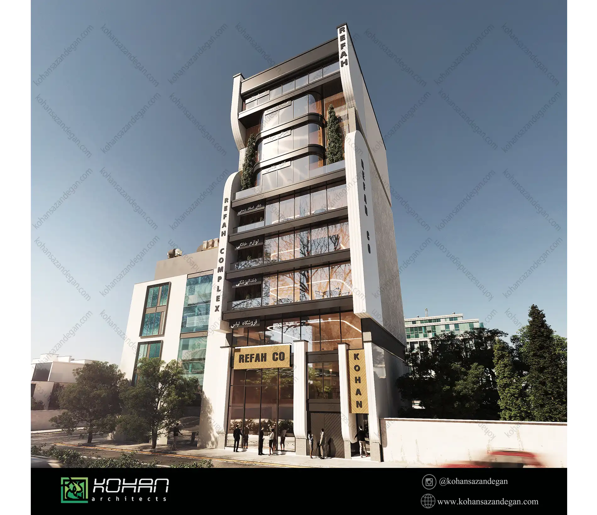
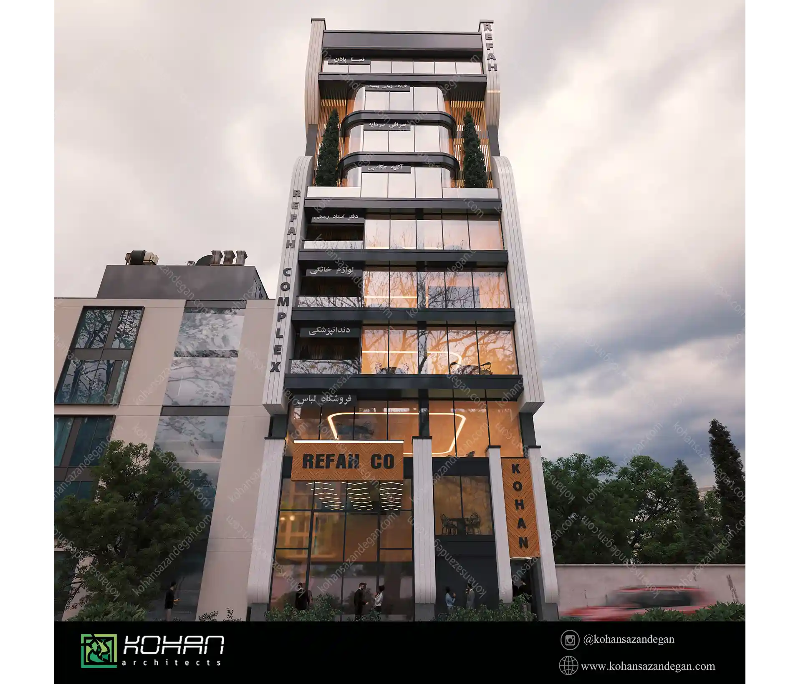
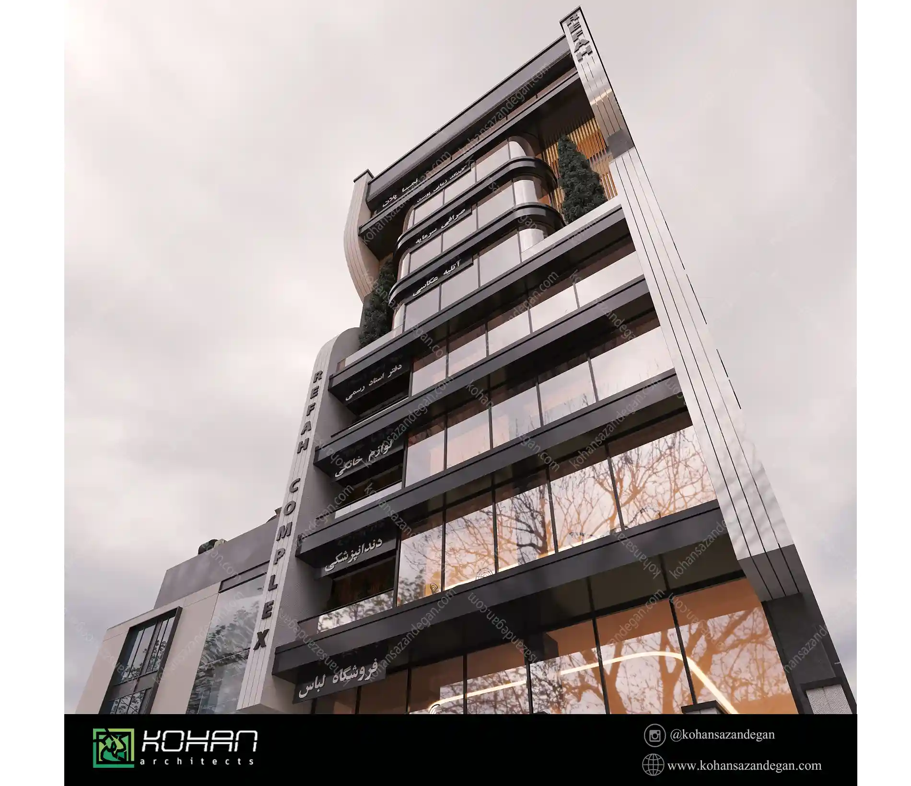
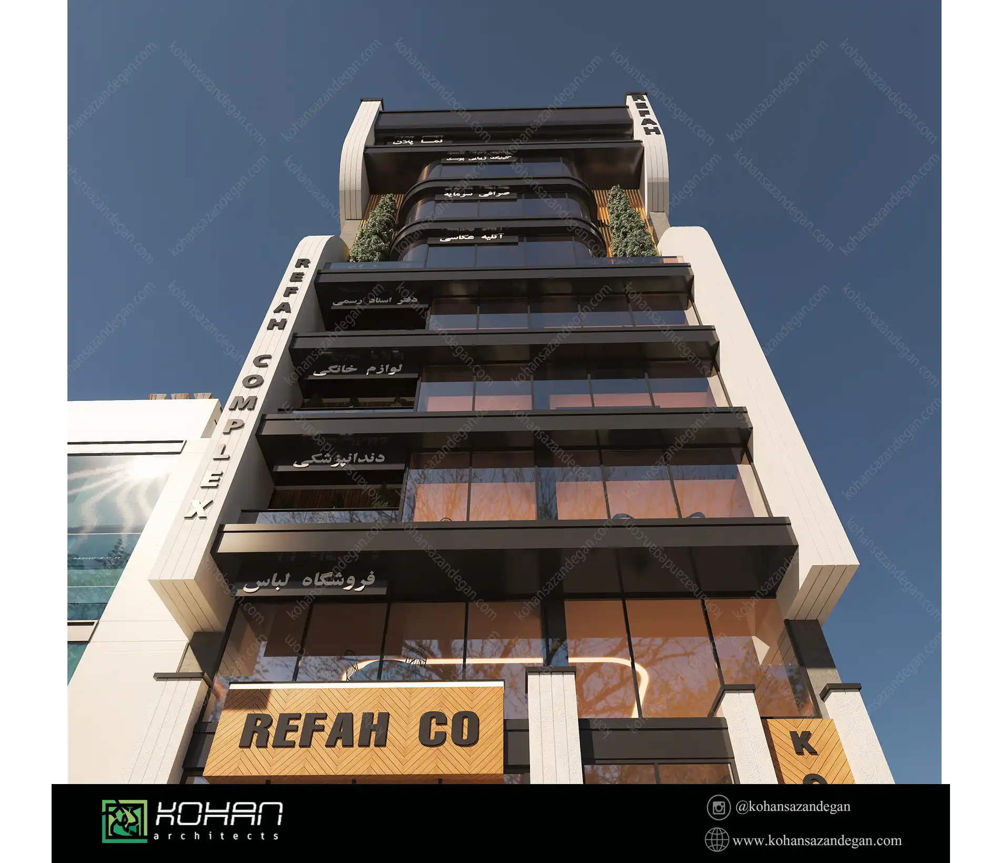
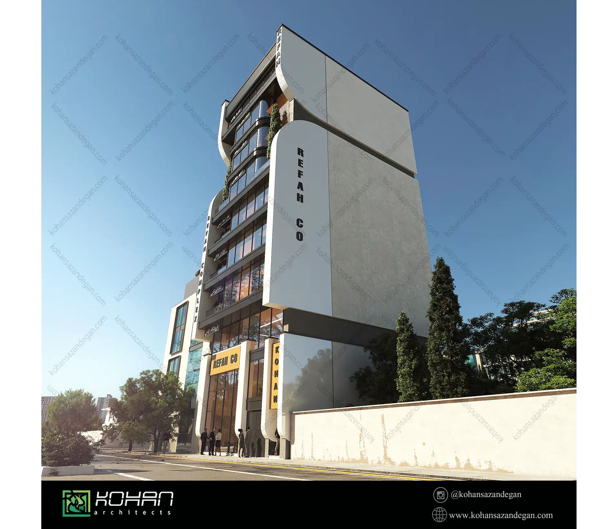
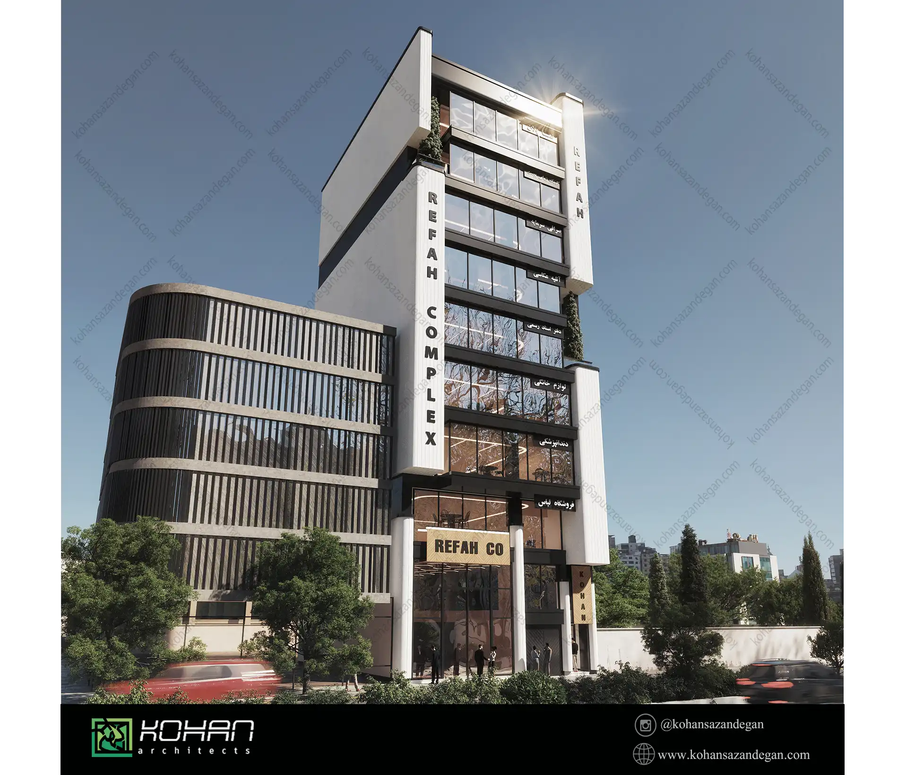
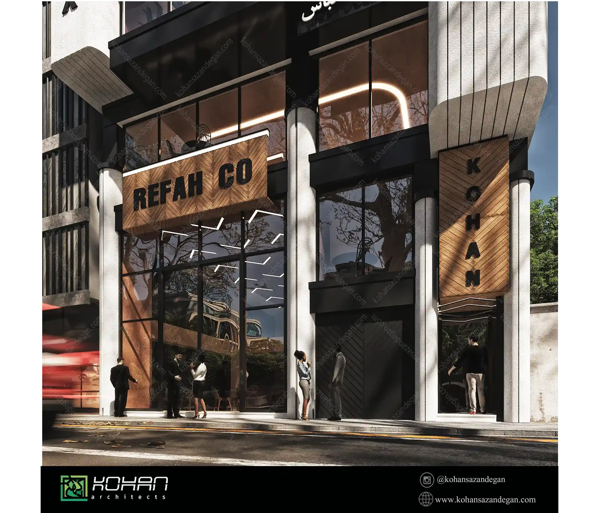
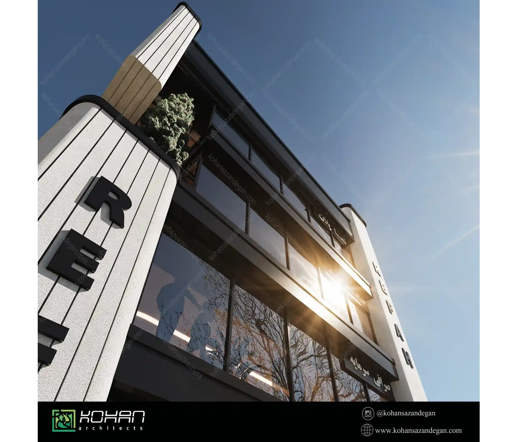

ساختمان اداری پارسه
• موقعیت: شیراز، بلوار جمهوری
• نوع پروژه: ساخت ساختمان اداری مدرن
• زیربنا: ۱۸۰۰ متر مربع
• تعداد طبقات: ۴ طبقه + پارکینگ
• زمان اجرا: ۱۱ ماه
• سال اتمام: ۱۴۰۱
امکانات:
• سیستم BMS برای کنترل انرژی، روشنایی، پردهها و تهویه
• سالن همایش با ظرفیت ۸۰ نفر
• آسانسور پانوراما با نمای شیشهای
• فضای باز اداری (Open Office) با دیوارهای جداکننده متحرک
ویژگی خاص:
• اجرای نمای شیشهای دو جداره با شیشه Low-E
• رعایت کامل اصول طراحی پایدار (نورگیری طبیعی، تهویه مناسب)
• گواهی استاندارد ساختمان سبز از سازمان نظام مهندسی شیراز
نقلقول کارفرما:
«اجرای پروژه دقیق، تمیز و طبق برنامه بود. تیم اجرایی بسیار حرفهای عمل کرد و حتی در بخشهایی فراتر از انتظار ما بودند.»







